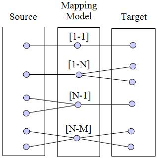

Mapping |
A mapping is a correspondence between model elements from source and target models.
Mapping is useful for several types of application: model/domain equivalence (e.g., Eclipse/ECore or OMG's MOF to UML mapping), model transformation, merging, comparison, migration, definition of bridge, problem to solution relationship. The objective is to explicitly declare a correspondence between a source and a target and to use it in different aspects of the production. This allows more flexibility when the source, the target or the correspondence evolve.
There exist four types of mapping relationship: [1-1], [1-N], [N-1] and [N-M].

Figure 1. Possible mapping relationships between source and target model elements
The [1-1] and [1-N] mappings are the most used types of mapping (e.g., a concept is mapped into a UML class for the [1-1] mapping, or mapped into a UML Class and Attribute for the [1-N] mapping). With the [N-1] mapping, several source elements allows deducing one target element, for instance for model merge or model transformation. The [N-M] mapping means several source and target elements are jointly involved for the realization of one mapping. For reducing complexity and maintenance, the N cardinalities can be reduced in applying N times the same kind of mapping, such as transforming the [1-N] mapping into N [1-1] mappings. A mapping is stored in a mapping model containing all source to target model element relationships.
Mappings, such as toward UML, need extensions (e.g., UML stereotypes and tagged values). Extensions are to be managed as model elements. As a consequence, there are two target models, the UML model and the extensions model, what infringes the rule to have one source and one target model. The solution is to compose the two target models in order to reduce them into one target model. The same operation can be applied at the source level.
Figure 2. Model Mapping